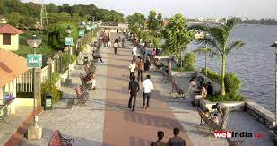

Jew Town

Jew Town, a narrow street between Mattancherry Palace and the Synagogue, is a favourite haunt of antique hunters. Some of the most pristine and historically relevant artefacts of our times have been unearthed by our visitors here. While a huge bronze vessel catches your eye first, each of the shops here contains beautiful items with quirky and interesting stories. They are like fractions of history, waiting for the right person to come and finally claim them.Historic Jew Town, the heart of the once-thriving Cochin Jewish community, is known for its old-world charm and 16th-century Paradesi Synagogue. Quaint shops around Synagogue Lane and Jew Town Road sell antiques, carvings, and vintage collectibles, along with Keralan crafts and aromatic spices. Laid-back outdoor cafes and artsy eateries, some in heritage buildings, serve local specialties and Western fare.
Marine Drive
Marine Drive, also known as APJ Abdul Kalam Marg, is a famous promenade in Kochi, India. It is built facing the backwaters, and is a popular hangout for the local populace. Despite its name, no vehicles are allowed on the walkway. Marine Drive is also an economically thriving part of the city of Kochi. Beyond its scenic allure, Marine Drive serves as an important economic centre in Kochi. Its vibrant landscape is adorned with shopping malls, hotels, offices, restaurants, cafes, and entertainment venues that attract both locals and tourists alike.